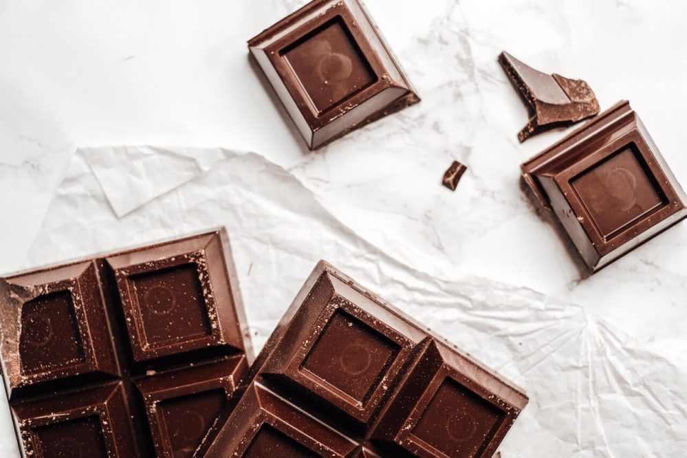

Let's make some Swiss Chocolate!

Description
Swiss chocolate is a type of chocolate that is produced in Switzerland and is known for its high quality and smooth, creamy texture. Swiss chocolate is made from cocoa beans that are sourced from around the world, but the chocolate itself is made and finished in Switzerland. Swiss chocolate is also known for its use of whole milk in the production process, which gives it a rich, milky flavor. Many Swiss chocolate makers are small, family-run businesses that have been producing chocolate for generations, and they use traditional techniques and methods to create their products. In addition to being enjoyed on its own, Swiss chocolate is also used in a variety of desserts and confections, such as truffles, chocolate bars, and chocolate-covered sweets.
In the following parts we would like to create such a dish, so we prepared a list of ingredients needed and a list of steps needed to make the dish.
Ingredients
- Cocoa butter: This is the fat from the cocoa bean and is what gives chocolate its smooth, creamy texture.
- Cocoa powder: This is made from ground cocoa beans and gives chocolate its chocolate flavor.
- Sugar: This adds sweetness to the chocolate. You can use granulated white sugar or a combination of white and brown sugars.
- Milk powder (optional): This can be added to give the chocolate a creamier texture and a milder flavor.
- Vanilla extract (optional): This adds a depth of flavor to the chocolate.
- Any additional flavorings or ingredients of your choice (optional): You can add things like nuts, dried fruit, spices, or other flavorings to customize your chocolate.
Steps
- Melt the cocoa butter in a double boiler or in a microwave-safe bowl in the microwave, stirring frequently.
- Stir in the cocoa powder and sugar until well combined.
- Add the milk powder and vanilla extract, if using, and stir until well combined.
- Stir in any additional flavorings or ingredients, if using.
- Pour the chocolate mixture into a mold or onto a tray lined with parchment paper
- Place the mold or tray in the refrigerator until the chocolate has hardened, about 1 hour.
- Break or cut the chocolate into pieces and enjoy!